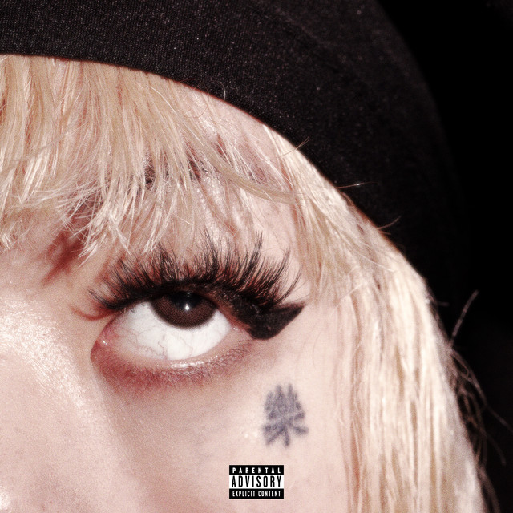

Dark Thoughts - Lil Tecca
At just 22 years old, he's the GOAT!
A hypnotic blend of melodic rap and moody beats, Dark Thoughts showcases Lil Tecca’s signature introspective lyricism. The track effortlessly rides between confidence and vulnerability, creating a vibe that’s both laid-back and emotionally charged. Perfect for late-night drives or moments of deep reflection.
More from Tecca Genius LyricsFor the R&B Lover
Leon Thomas brings a smooth, genre-bending sound to Mutt, blending elements of R&B, jazz, and alternative vibes. His soulful vocals and intricate production make this track feel like a sonic journey—effortlessly cool, deeply personal, and impossible to skip
A soulful and emotionally charged masterpiece, You, The World vs Me sees Odeal blend Afroswing, R&B, and introspective storytelling. With smooth vocals and a hypnotic beat, the track captures the feeling of resilience and longing, making it the perfect soundtrack for late-night thoughts and deep conversations..
Like my music taste? Check out my spotify profile